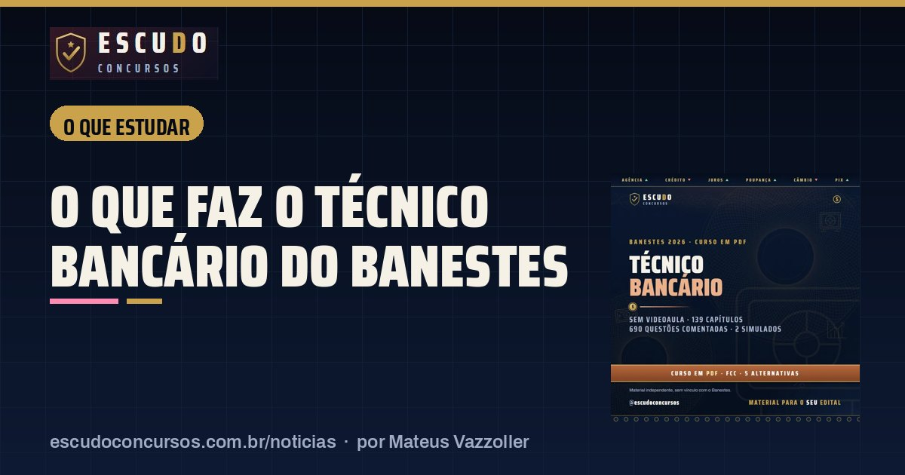

O que faz o Técnico Bancário do Banestes: as 24 atribuições do edital e o que elas cobram na prova da FCC
O que estudarPublicado em 25 de novembro de 2026 · por Mateus Vazzoller, ESCUDO Concursos

O Técnico Bancário do Banestes é o empregado que atende o cliente na agência, vende os produtos do banco, abre e encerra contas, cuida de cheques, cobranças e câmbio e mantém os sistemas e relatórios da área em dia. O Anexo I do Edital nº 01/2026 lista 24 atribuições para o cargo, com jornada de 30 horas semanais e remuneração de R$ 4.552,43. Quem fez a inscrição até 23/11 e vai encarar a prova da FCC em 24/01/2027 pode usar essa lista como mapa: quase toda tarefa do dia a dia tem uma disciplina correspondente no edital.
| Órgão | Banco do Estado do Espírito Santo (Banestes), sociedade de economia mista |
|---|---|
| Cargo | Técnico Bancário, nível médio, regime CLT |
| Jornada e salário | 30 horas semanais, R$ 4.552,43 (base de R$ 3.641,95 mais gratificação de R$ 910,48) |
| Vagas | 866 postos de cadastro de reserva em 34 polos |
| Banca e prova | FCC, 24/01/2027, de manhã, 70 questões |
| Início | Contrato de experiência de 90 dias e Semana de Integração obrigatória |
O que o Técnico Bancário faz no dia a dia?
O edital descreve as 24 tarefas em uma lista única. Agrupadas pelo tipo de trabalho, elas formam quatro frentes:
| Frente | O que o edital manda fazer |
|---|---|
| Atendimento | Atender clientes e público, identificar a necessidade, prestar informação, executar o serviço ou encaminhar à área certa; orientar o uso dos canais eletrônicos e dos correspondentes |
| Comercial | Divulgar e vender produtos e serviços do Banestes e das empresas do Sistema Financeiro Banestes, identificar oportunidades de negócio, simular e formalizar Proposta de Negócio, cobrar contratos em atraso ou em prejuízo |
| Operações | Abrir e encerrar contas (com autorização gerencial), cadastrar e renovar clientes, cancelar e sustar cheques, preparar a exclusão do CCF, lançar títulos para desconto de recebíveis, abrir contas judiciais e liberar saques com alvará, liberar ordens de pagamento e operar compra e venda de moeda estrangeira |
| Apoio e controle | Elaborar e conferir relatórios e planilhas, conciliar contas contábeis, conferir notas fiscais, criar usuários e permissões de acesso, transmitir imagens de documentos, organizar arquivos e redigir correspondências |
Em várias tarefas o edital põe um limite: a abertura de conta, o cadastro e a sustação de cheque dependem de autorização do gerente. O técnico executa; a decisão final fica com a gerência.
Quanto ganha e quanto trabalha?
A jornada é de 30 horas por semana. A remuneração de R$ 4.552,43 soma o salário-base de R$ 3.641,95 e a gratificação de 25% da convenção coletiva, de R$ 910,48, que o edital avisa que pode ou não se repetir nas próximas convenções. Por cima disso vêm auxílio-refeição de R$ 1.283,04, cesta-alimentação de R$ 1.045,64, auxílio-creche ou babá de R$ 733,60, vale-transporte e participação nos lucros.
O contrato é pela CLT, como empregado efetivo do Banestes. Os primeiros 90 dias são de experiência, com avaliação de capacidade técnica, assiduidade, disciplina e adaptação ao cargo. Quem não for bem avaliado tem o contrato encerrado no fim desse prazo.
Cada tarefa do cargo, uma disciplina da prova
A prova de 24/01/2027 tem 70 questões, e os Conhecimentos Específicos pesam o dobro dos Gerais. A tabela liga as frentes do cargo ao que o Anexo IV cobra:
| Frente do cargo | Disciplina no edital | Questões | O que o programa cobra que você vai usar na agência |
|---|---|---|---|
| Atendimento e comercial | Vendas, Negociação e Atendimento | 10 | Técnicas de venda e pós-venda, negociação, CRM, adequação do produto ao perfil do cliente, tratamento de reclamações |
| Operações | Conhecimentos Bancários | 15 | Contas, meios de pagamento, crédito, cartões, Pix e Open Finance, prevenção à lavagem de dinheiro, seguros, previdência, capitalização e consórcio |
| Proposta de Negócio e cobrança | Matemática Financeira | 5 | Juros simples e compostos, taxas, desconto, séries de pagamento e sistemas de amortização |
| Relatórios e planilhas | Noções de Probabilidade e Estatística | 5 | Tabelas, gráficos, média, mediana, moda e medidas de dispersão |
| Sistemas, usuários e cadastro | Noções de Informática e Comportamentos Digitais | 5 | LGPD aplicada a cadastro e crédito, Google Workspace, senhas, phishing e engenharia social |
| Conduta e controle | Ética, Compliance e ESG | 5 | Controles internos, canais de denúncia, prevenção a fraudes e o Guia de Conduta Ética do Banestes |
Vendas e Conhecimentos Bancários somam 25 questões de peso 2, e são justamente as duas frentes em que o técnico passa a maior parte do expediente. Começar por elas é estudar o cargo e a parte mais pesada da prova ao mesmo tempo.
Onde vou trabalhar?
A convocação segue a lista do polo escolhido na inscrição, dentro da ordem de classificação e da validade do concurso. O edital também deixa o Banestes cobrir vagas por remoção interna de quem já é do quadro, então a posição na lista do polo é o que conta.
Quem já trabalha no Sistema Financeiro Banestes e for aprovado assina um contrato novo: precisa se desligar do cargo anterior, entra no nível inicial da tabela, não leva os anuênios e passa de novo pelo período de experiência.
Como começa o trabalho depois da aprovação?
Depois do exame admissional e da conferência dos documentos, o candidato é chamado para a Semana de Integração, obrigatória, em que assina o contrato e faz os treinamentos de compliance. Faltar no dia e no horário da convocação elimina o candidato. É a mesma matéria de Ética, Compliance e ESG da prova, agora na prática.
Para estudar as 70 questões na ordem do cargo, o curso Técnico Bancário do Banestes segue o Anexo IV disciplina por disciplina, com questões de cinco alternativas no estilo da FCC.
Curso ESCUDO Técnico Bancário do Banestes em PDF: 139 capítulos e 690 questões comentadas, 2 simulados no formato da prova, de acordo com o edital. R$ 47.
Ver o curso
Perguntas frequentes
O que faz um Técnico Bancário do Banestes?
Atende clientes, vende produtos e serviços do banco, abre e encerra contas, cuida de cheques, cobranças, contas judiciais e câmbio e mantém relatórios e sistemas da área. O Anexo I do edital lista 24 atribuições.
Quanto ganha o Técnico Bancário do Banestes?
R$ 4.552,43 por 30 horas semanais, somando salário-base de R$ 3.641,95 e gratificação de R$ 910,48. Há ainda auxílio-refeição de R$ 1.283,04 e cesta-alimentação de R$ 1.045,64, entre outros benefícios.
O Técnico Bancário do Banestes tem estabilidade?
O contrato é pela CLT, como empregado efetivo de uma sociedade de economia mista, com 90 dias iniciais de experiência. Quem não tiver avaliação satisfatória nesse período tem o contrato encerrado.
Leia também
- NotíciaBanestes Técnico Bancário: inscrições terminam segunda-feira, 23/11, às 23h59, e o boleto vence na terça, 24/11
21 de novembro de 2026 · Concurso Banestes: inscrições para Técnico Bancário terminam em 23/11/2026, às 23h59, na FCC. Boleto de R$ 67,00 gerado até as 22h e pago até 24/11.
- O que estudarPC-PE Agente: o que estudar pelo peso de cada bloco na prova do Cebraspe
19 de novembro de 2026 · PC-PE Agente: como os 90 pontos se dividem entre Direito, Conhecimentos Específicos e redação, quanto cada matéria pesou em 2023 e 15 horas por semana.
- O que estudarIBGE Recenseador: o que estudar para a prova da Cesgranrio, com metade dos pontos na apostila do Censo Agro
17 de novembro de 2026 · O que estudar para Recenseador do IBGE: Conhecimentos Técnicos valem metade das 60 questões, o que cortar do edital de 2021 e a semana de estudo pelo peso.
Guia completo do concurso: edital, vagas e o que cai · Mais notícias e dicas de concursos